Chapter 10: Quntized Algorithms
There is a catch ofcourse: this algorithm needs a quantum computer to execute.
Qubits, superposition and measurment
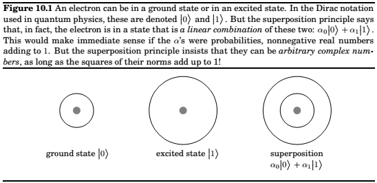
Such a superposition is the basic unit of encoded information in quantum computers. It is called a qubit.
This linear superposition is however private to the electron. For us to get a glimpse of the electron’s state, we must make a measurment, and when we do get a single bit of information, 0 or 1.
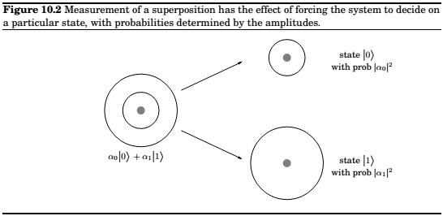
How do we encode $n$ bits of information? We could choose $k=2^n$ levels of the hydrogen atom. But a more promising option is to use $n$ qubits.
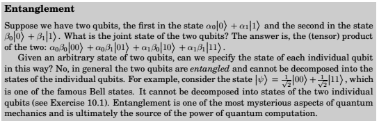
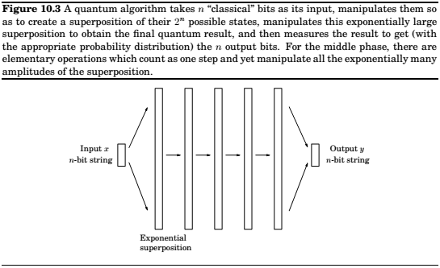
In this phenomenon lies the basic motivation for quantum computation. After all, if Nature is so extravagant at the quantum level, why should we base our computers on classical physics? Why not tap into this massive amount of effort being expended at the quantum level?
But there is a fundamental problem: this exponentially large linear superposition is the private world of the electrons. Measuring the system only reveals $n$ bits of information. As before, the probability that the outcome is a particular 500-bit string $x$ is $|\alpha_x|^2$. And the new state after measurement is just $|x>$.
The plan
The input to a quantum algorithm consists of $n$ classical bits, and the output also consists of $n$ classical bits. It is while the quantum system is not being watched that the quantum effects take over and we have the benefit of Nature working exponentially hard on our behalf.
If the input is an $n$-bit string $x$, then the quantum computer takes as input $n$ qubits in state $|x>$. Then a series of quantum operations are performed, by the end of which the state of the $n$ qubits has been transformed to some superposition $\su_y\alpha_y|y>$. Finally, a measurement is made, and the output is the n-bit string y with probability $|\alpha_y|^2$. Observe that this output is random. But this is not a problem, as we have seen before with randomized algorithms such as the one for primality testing. As long as $y$ corresponds to the right answer with high enough probability, we can repeat the whole process a few times to make the chance of failure miniscule.
Noe let us look more closely at the quantum part of the algorithm. Some of the key quantum operations(which we will soon discuss) can be thought os as looking for certain kinds of patterns in a superposition of states. Because of this, it is helpful to think of the algorithm as having two stages. In the first stage, the $n$ classical bits of the input are “unpacked” into an exponentially large superposition, which is expressly set up as to have an underlying pattern or regularity that, if detected, would solve the task at hand. The second stage then consists of a suitable set of quantum operations, followed by a measurement, which reveals the hidden pattern.
The algorithm to factor a large integer $N$ can be viewed as a sequence of reductions:
- FACTORING is reduced to finding a nontrivial square root of 1 modulo $N$.
- Finding such a root is reduced to computing the order of a random integer modulo $N$.
- The order of an integer is precisely the period of a particular periodic superposition.
- Finally, periods of superposition can be found by the quantum FFT.
The Quantum Fourier Transform
The FFT,
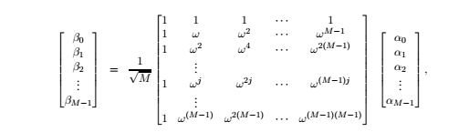
where $\omega$ is a complex $M$th root of unity(the extra factor of $\sqrt{M}$ has the effect of ensuring that is the $|\alpha_i|^2$ add up to 1, then so do the $|\beta_i|^2$). Although the proceeding equation suggests an $O(M^2)$ algorithm, the classical FFT is able to perform this calculation in just $O(M\log{M})$ steps, and it is this speedup that has the profound effect of making digital signal processing practically feasible. We will now see that quantum computers can implement the FFT exponentially faster, in $O(\log^2M)$ time!
But waut, how can any algorithm take time less than $M$, the length of the input? The point is that we can encode the input in a superposition of just $m = \log{M}$ qubits; after all, this superposition of $2m$ amplitude values.
Starting from this input superposition $\alpha$ , the quantum Fourier transform(QFT) manipulates it appropriately in $m = \log M$ stages. At each stage the superposition evolves so that it encodes the intermediate results at the same stage of the classical FFT (whose circuit, with $m = \log M$ stages, is reproduced from Chapter 2). This can be achieved with m quantum operations per stage. Ultimately, after m such stages and $m^2 = log^2 M$ elementary operations, we obtain the superposition $\beta$ that corresponds to the desired output of the QFT.
So far we have only considered the good news about the QFT: its amazing speed. Now it is time to read the fine print. The classical FFT algorithm actually outputs the M complex
numbers $\beta_0,… , \beta_{M-1}$. In contrast, the QFT only prepares a superposition $\beta = P_{M_{j=0 −1} \beta_j}$. And, as we saw earlier, these amplitudes are part of the *“private world”* of this quantum
system.
Thus the only way to get our hands on this result is by measuring it! And measuring the state of the system only yields $m = \log M$ classical bits: specifically, the output is index $j$ with probability $|\beta_j|^2$.
So, instead of QFT, it would be more accurate to call this algorithm *quantum Fourier sampling*. Moreover, even though we have confined our attention to the case $M = 2m$ in this
section, the algorithm can be implemented for arbitrary values of M, and can be summarized as follows:
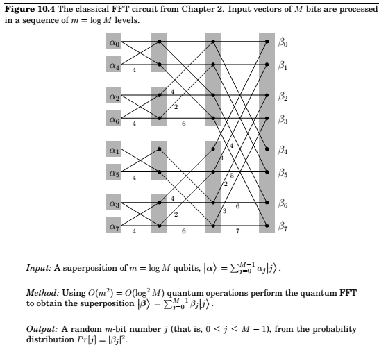
Quantum Fourier sampling is basically a quick way of getting a very rough idea about the output of the classical FFT, just detecting one of the larger components of the answer vector.
In fact, we don’t even see the value of that component—we only see its index. How can we use such meager information? In which applications of the FFT is just the index of the large components enough? This is what we explore next.
Periodicity
Suppose that the input to the QFT, $\alpha = (\alpha_0, \alpha_1,… , \alpha_{M−1})$, is such that $\alpha_i = \alpha_j$ whenever $i \equiv j \pmod k$, where $k$ is a particular integer that divides $M$. That is, the array $\alpha$ consists of $M/k$ repetitions of some sequence $(\alpha_0, \alpha_1,…, \alpha_{k−1})$ of length k. Moreover, suppose that exactly one of the $k$ numbers $\alpha_0,… , \alpha_{k−1}$ is nonzero, say $\alpha_j$. Then we say that $\alpha$ is *periodic with period $k$ and offset $j$*.
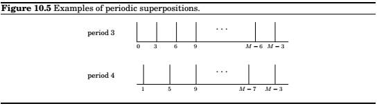
It turns out that if the input vector is periodic, we can use quantum Fourier sampling to compute its period! This is based on the following fact, proved in the next lines:
Suppose the input to quantum Fourier sampling is periodic with period $k$, for some $k$ that divides $M$. Then the output will be a multiple of $M/k$, and it is equally likely to be any of the $k$ multiples of $M/k$.
Now a little thought tells us that by repeating the sampling a few times (repeatedly preparing the periodic superposition and doing Fourier sampling), and then taking the greatest common divisor of all the indices returned, we will with very high probability get the number $M/k$ — and from it the period $k$ of the input!
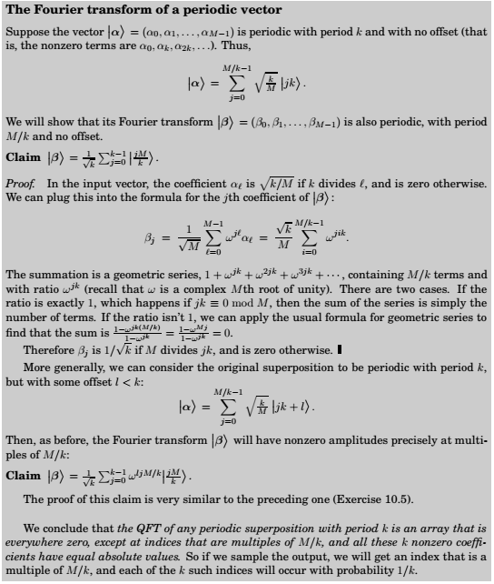
Quantum Circuits
So quantum computers can carry out a Fourier transform exponentially faster than classical computers. But what do these computers actually look like? What is a quantum circuit made up of, and exactly how does it compute Fourier transforms so quickly?
Elementary quantum gates
An elementary quantum operation is analogous to an elementary gate like the AND or NOT
gate in a classical circuit. It operates upon either a single qubit or two qubits. One of the most
important examples is the Hadamard gate, denoted by $H$, which operates on a single qubit.
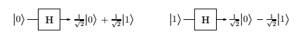
Notice that in either case, measuring the resulting qubit yields $0$ with probability $1/2$ and $1$ with probability $1/2$. But what happens if the input to the Hadamard gate is an arbitrary superposition $\alpha_0 |0> + \alpha_1 |1>$ ? The answer, dictated by the linearity of quantum physics, is the superposition $\alpha_0H( 0 ) + \alpha_1H( 1 ) = \alpha_0\sqrt2 \alpha_1 |0> + \alpha_0\sqrt{−2} \alpha_1 |1>$ . And so, if we apply the Hadamard gate to the output of a Hadamard gate, it restores the qubit to its original state!
Another basic gate is the controlled-NOT, or CNOT. It operates upon two qubits, with the first acting as a control qubit and the second as the target qubit. The CNOT gate flips the second bit if and only if the first qubit is a 1. Thus CNOT( 00 ) = 00 and CNOT( 10 ) = 11 :
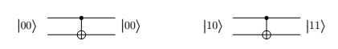
Yet another basic gate, the controlled phase gate, is described below in the subsection describing the quantum circuit for the QFT.
Now let us consider the following question: Suppose we have a quantum state on n qubits, $\alpha = P_x\in{0,1}_n \alpha_x x$ . How many of these $2n$ amplitudes change if we apply the Hadamard gate to only the first qubit? The surprising answer is—all of them! The new superposition becomes $\beta = P_x\in{0,1}_n \beta_x x$ , where $\beta_0y = \alpha_0y\sqrt{2} + \alpha_1y and \beta_1y = \alpha_0y\sqrt{−2}\alpha_1y$ . Looking at the results more closely, the quantum operation on the first qubit deals with each $n − 1$ bit suffix $y$ separately. Thus the pair of amplitudes $\alpha_0y$ and $\alpha_1y$ are transformed into $(\alpha_0y + \alpha_1y)/\sqrt2$ and $(\alpha_0y −\alpha_1y)/\sqrt2$. This is exactly the feature that will give us an exponential speedup in the quantum Fourier transform.
Two basic types of quantum circuits
A quantum circuit takes some number n of qubits as input, and outputs the same number of qubits. In the diagram these n qubits are carried by the n wires going from left to right. The quantum circuit consists of the application of a sequence of elementary quantum gates (of the kind described above) to single qubits and pairs of qubits. At a high level, there are two basic functionalities of quantum circuits that we use in the design of quantum algorithms:
Quantum Fourier Transform These quantum circuits take as input n qubits in some state $\alpha$ and output the state $\alpha$ resulting from applying the QFT to $\alpha$. Classical Functions Consider a function f with n input bits and m output bits, and suppose we have a classical circuit that outputs f(x). Then there is a quantum circuit that, on input consisting of an n-bit string x padded with m 0’s, outputs x and f(x):
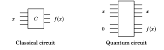
Understanding quantum circuits at this high level is sufficient to follow the rest of this chapter. The next subsection on quantum circuits for the QFT can therefore be safely skipped by anyone not wanting to delve into these details.